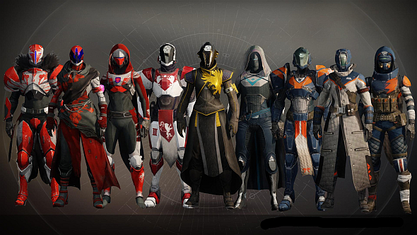

Armor
Armor is protective equipment worn by Guardians to deflect damage and prevent injury. In gameplay, armor is divided between multiple slots that correspond to a different body part and can have perks and attributes that provide further benefits during combat. Only one piece of armor can be equipped in each slot at any time, while nine more pieces of armor can be stored in inventory for each armor slot. Only one exotic armor piece can be equipped at a time.
There are six different armor slots:
Helmet: Armor worn on a Guardian's head.
Gauntlets: Armor worn on a Guardian's arms.
Chest Armor: Armor worn on a Guardian's chest.
Leg Armor: Armor worn on a Guardian's legs.
Class Item: Depending on a Guardian's class, this could be a bond (Warlock), mark (Titan), or cloak (Hunter). All look different, but function the same.
Ghost Shell: The shell worn by a Guardian's Ghost.
Artifact: Not visible on a Guardian, but grants additional boosts to attributes and unique perks. This slot is locked until level 40.
Attributes
Armor pieces can provide varying amounts of Intellect, Discipline, and/or Strength. Each of these attributes reduces the cooldown of one of the Guardian's abilities. The efficiency of the armor at reducing the cooldown for a particular attribute decreases as the player levels. For example, a helmet with +20 Discipline is more effective at reducing grenade cooldown at level 8 than at level 12. That means to get the same level of effectiveness the player once had at lower levels, they must equip armor with a higher value of the particular attribute.
There are six different attributes to each armor piece: Mobility, Resilience, Recovery, Discipline, Intellect, and Strength.